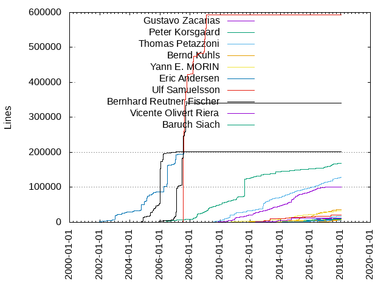
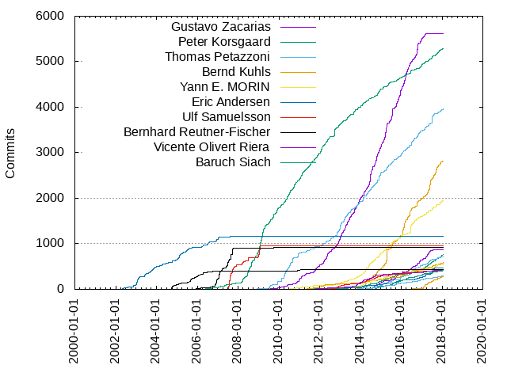

Authors
| Author | Commits (%) | + lines | - lines | First commit | Last commit | Age | Active days | # by commits |
|---|
| Gustavo Zacarias | 5610 (14.38%) | 101069 | 148542 | 2009-06-23 | 2017-10-17 | 3038 days, 7:06:55 | 1206 | 1 |
| Peter Korsgaard | 5287 (13.55%) | 168885 | 823564 | 2006-04-28 | 2018-01-17 | 4281 days, 11:09:04 | 1776 | 2 |
| Thomas Petazzoni | 3958 (10.14%) | 128327 | 315233 | 2008-11-08 | 2018-01-18 | 3357 days, 12:42:59 | 933 | 3 |
| Bernd Kuhls | 2823 (7.24%) | 37185 | 28803 | 2013-12-29 | 2018-01-14 | 1477 days, 0:47:00 | 563 | 4 |
| Yann E. MORIN | 1944 (4.98%) | 33590 | 73847 | 2010-02-08 | 2018-01-15 | 2898 days, 5:03:41 | 624 | 5 |
| Eric Andersen | 1163 (2.98%) | 201274 | 82474 | 2001-12-21 | 2008-12-09 | 2544 days, 19:04:20 | 373 | 6 |
| Ulf Samuelsson | 955 (2.45%) | 592901 | 670037 | 2007-07-06 | 2009-07-24 | 749 days, 3:44:31 | 136 | 7 |
| Bernhard Reutner-Fischer | 924 (2.37%) | 341341 | 34633 | 2005-11-25 | 2011-12-16 | 2211 days, 18:08:30 | 193 | 8 |
| Vicente Olivert Riera | 867 (2.22%) | 11821 | 16215 | 2013-11-18 | 2017-07-21 | 1341 days, 5:41:00 | 342 | 9 |
| Baruch Siach | 758 (1.94%) | 11703 | 9431 | 2009-11-23 | 2018-01-16 | 2975 days, 15:12:33 | 410 | 10 |
| Romain Naour | 720 (1.85%) | 18127 | 11695 | 2013-09-06 | 2018-01-13 | 1589 days, 15:40:09 | 300 | 11 |
| Yegor Yefremov | 583 (1.49%) | 8105 | 3212 | 2010-08-30 | 2018-01-17 | 2696 days, 18:02:10 | 331 | 12 |
| Francois Perrad | 558 (1.43%) | 9113 | 3341 | 2010-08-05 | 2018-01-17 | 2722 days, 2:08:46 | 219 | 13 |
| Arnout Vandecappelle | 464 (1.19%) | 10873 | 15510 | 2012-04-28 | 2017-08-15 | 1935 days, 15:55:02 | 158 | 14 |
| Samuel Martin | 439 (1.13%) | 21035 | 4596 | 2011-10-20 | 2017-11-03 | 2205 days, 17:27:48 | 147 | 15 |
| Mike Frysinger | 437 (1.12%) | 202250 | 17051 | 2004-10-08 | 2011-10-09 | 2557 days, 3:36:37 | 161 | 16 |
| Thomas De Schampheleire | 411 (1.05%) | 12575 | 9898 | 2011-02-23 | 2018-01-02 | 2504 days, 21:22:42 | 152 | 17 |
| Jörg Krause | 411 (1.05%) | 9704 | 6460 | 2014-08-25 | 2018-01-14 | 1237 days, 20:16:21 | 218 | 18 |
| Peter Seiderer | 292 (0.75%) | 6041 | 3318 | 2013-10-14 | 2018-01-15 | 1554 days, 2:10:20 | 174 | 19 |
| Adam Duskett | 283 (0.73%) | 7544 | 7333 | 2016-06-26 | 2018-01-14 | 566 days, 20:17:36 | 67 | 20 |
These didn't make it to the top: Fabio Estevam, Waldemar Brodkorb, Jerzy Grzegorek, Maxime Hadjinlian, Luca Ceresoli, Paulius Zaleckas, Simon Dawson, Fabio Porcedda, Arnout Vandecappelle (Essensium/Mind), John Voltz, Rahul Bedarkar, Martin Bark, "Steven J. Hill", Will Wagner, Danomi Manchego, Fabrice Fontaine, Gary Bisson, Manuel Novoa III, Jérôme Pouiller, Sven Neumann, Eric Le Bihan, Axel Lin, Alexey Brodkin, Angelo Compagnucci, Frank Hunleth, Max Filippov, Lionel Landwerlin, Maxime Ripard, Julien Floret, Nigel Kukard, Matt Weber, Hans-Christian Egtvedt, Johan Oudinet, Will Newton, Ricardo Martincoski, Spenser Gilliland, Ryan Barnett, André Hentschel, Carlos Santos, Hamish Moffatt, Allan W. Nielsen, gilles.talis@gmail.com, Markos Chandras, Martin Banky, Ivan Kuten, Fatih Aşıcı, David Anders, Daniel Laird, Petr Vorel, Benoît Thébaudeau, Bartosz Golaszewski, Thiago A. Corrêa, Alex Suykov, Alexandre Belloni, Sergio Prado, Ludovic Desroches, James Knight, Erico Nunes, Sagaert Johan, Julien Boibessot, Floris Bos, Christian Stewart, Mischa Jonker, Chris Packham, Andrey Smirnov, Zakharov Vlad, Gwenhael Goavec-Merou, Rodrigo Rebello, Olivier Schonken, Gabe Evans, Clayton Shotwell, Martin Kepplinger, Karoly Kasza, Sergey Matyukevich, Mike Williams, Ezequiel García, Daniel Mack, Philippe Proulx, Paul Cercueil, Jagan Teki, Christophe Vu-Brugier, Anton Kolesov, Zoltan Gyarmati, Mauro Condarelli, Thomas Lundquist, Stephan Hoffmann, Ryan Coe, Phil Eichinger, Michael Roth, Davide Viti, Dagg Stompler, Bjørn Forsman, Sam bobroff, H Hartley Sweeten, Steven Noonan, Marcin Niestroj, Carsten Schoenert, Vivien Didelot, Gaël PORTAY, Marek Belisko, Marcus Folkesson, Kelvin Cheung, Brendan Heading, cmchao, Wade Berrier, Stefan Fröberg, Ezequiel Garcia, Wolfgang Grandegger, Jan Viktorin, Vincent Stehlé, Nathaniel Roach, Mario Lang, Jeremy Rosen, Guido Martínez, Valentine Barshak, Sonic Zhang, Masahiro Yamada, Julien CORJON, Joris Lijssens, Hadrien Boutteville, Benoît Allard, Nathan Lynch, Marcin Nowakowski, Maarten ter Huurne, Julien BOIBESSOT, Jonathan Ben Avraham, Joel Stanley, Gregory Hermant, Anders Darander, Alvaro G. M, Alistair Francis, eric.le.bihan.dev@free.fr, Thiago A. Correa, Sébastien Szymanski, Stefan Sørensen, Jesper Baekdahl, Geoff Levand, Doug Kehn, Andrew Webster, Richard Genoud, Paul Mundt, Jonathan Liu, Jeremy Kerr, Jean-Christophe PLAGNIOL-VILLARD, David Bachelart, Assaf Inbal, Rahul Jain, Nikolay Dimitrov, Maxim Mikityanskiy, Lothar Felten, Lionel Flandrin, Chris Zankel, Arnar Mar Sigurðsson, Adrián Pérez de Castro, Steve Kenton, Ned Ludd, Marcus Hoffmann, Joshua Henderson, David du Colombier, Daniel Nyström, Cam Hutchison, Aurélien Chabot, Arnaud Aujon, Aleksander Morgado, Adrian Perez de Castro, Yuvaraj Patil, Phil Edworthy, Paul Jones, Noé Rubinstein, Joao Pinto, Gilles Talis, Evgeniy Didin, David Lechner, Arnaud Rébillout, Andrey Yurovsky, Alexander Dahl, Thomas Claveirole, Romain Perier, Richard Braun, Pieterjan Camerlynck, Philippe Reynes, Patrick Ziegler, Naumann Andreas, Maxim Grigoriev, Julian Scheel, Johan Sagaert, Felipe Contreras, Cyril Bur, Cody P Schafer, Alexander Lukichev, Vanya Sergeev, Thierry Bultel, Sebastien Bourdelin, Peter Kümmel, Maxime Petazzoni, Matt Kraai, Marcelo Gutiérrez(UTN/FRH), Lada Trimasova, Kurt Van Dijck, Ignacy Gawędzki, Andy Shevchenko, Alexander Mukhin, kei-k@ca2.so-net.ne.jp, Tzu-Jung Lee, Tristan Lelong, Trent Piepho, Simon Marchi, Peter S. Mazinger, Nicolas Cavallari, Mark Jackson, Malte Starostik, Julien Corjon, Joseph Kogut, Joerg Krause, Joakim Tjernlund, Jan Heylen, Ivan Sergeev, Guillaume GARDET, Gregory Dymarek, Gilles Chanteperdrix, Charles Manning, André Erdmann, Andrew Ruder, universe II, ludovic.desroches@atmel.com, erico.nunes, Tim Riker, Samuel MARTIN, Sam Voss, Petr Kulhavy, Pedro Aguilar, Olaf Rempel, Michael Rommel, Martin Hicks, Markus Heidelberg, Mahyar Koshkouei, Jordan Yelloz, John Keeping, Ismael Luceno, Heiko Zuerker, Gergely Imreh, Georges Savoundararadj, Frederic Bassaler, Eric Nelson, Eric Limpens, Chih-Min Chao, Alexander Clouter, Alan Ott, ANDY KENNEDY, Volkov Viacheslav, Semyon Kolganov, Romain Izard, Rob Landley, Pieter Smith, Norbert Lange, Nicolas Serafini, Lionel Orry, Jon Nelson, Johan Derycke, Henk Fijnvandraat, Heiko Abraham, Frederik Pasch, Darius Augulis, Cédric Marie, Charles Hardin, Chakra Divi, Ben Shelton, Ariel D'Alessandro, Andreas Wetzel, Alexandre Esse, Alexander Khryukin, Akihiko Odaki, nmenegale, gregory hermant, bradford barr, Wojciech M. Zabolotny, Vlad Zakharov, Vincent, Ulf Magnusson, Tom Sparks, Tilman Keskinöz, Thijs Vermeir, Theo Debrouwere, Shawn J. Goff, Scott Fan, Sam Mendoza-Jonas, Rico Bachmann, Richard van Paasen, Ray Kinsella, Peter Rosin, Pawel Sikora, Oli Vogt, Nicolas Dechesne, Nicholas Sielicki, Murat Demirten, Markus Mayer, Marcin Bis, Manuel Vögele, Konrad Eisele, Julien Viard de Galbert, Judd Meinders, Jeroen Roovers, Jan Kraval, James Hogan, Ivo Slanina, Hollis Blanchard, Gustavo Sverzut Barbieri, Guo Ren, Gregory CLEMENT, David Bender, Danomi Mocelopolis, Damien Lanson, Chris Frederick, Biagio Montaruli, Benoît Mauduit, Antoine Ténart, Alexey Roslyakov, trem, alex.bennee@linaro.org, Yugendra Sai Babu Nadupuru, Wojciech Slenska, Wojciech Niziński, William Wagner, Waldemar Rymarkiewicz, Victor Hiairrassary, Viallard Anthony, Vasily Khoruzhick, Trevor Woerner, Tobias Klauser, Steve Thomas, Steve James, Stefan Nickl, Stefan Froberg, Stanislav Bogatyrev, Simon Maes, Shawn Landden, Sergey Alyoshin, Reuben Dowle, Renaud AUBIN, Pieter De Gendt, Philipp Claves, Peter Thompson, Peter Sanford, Nick Leverton, Naoki Matsumoto, Michael Trimarchi, Matthew Shyu, Matthew Fornero, Mathieu Audat, Mario Rugiero, Marcelo Gutierrez, Lee Jones, Koen Martens, Khem Raj, Justin Maggard, Josh.Wu, Jerônimo Lopes, Jerome Oufella, Javier Viguera, Ilias Apalodimas, Hugues Fruchet, Frank Bergmann, Fabien Marteau, Eelco Chaudron, Dimitry Golubovsky, David PICARD, Daniele Salvatore Albano, Daniel Price, Carlo Caione, Bryce Ferguson, Brian Redbeard, Bimal Jacob, Atul Singh, Ash Charles, Andreas Ehmanns, Anders Roxell, Alexey Mednyy, Abhimanyu Vishwakarma, spdawson@gmail.com, rvpaasen, przemyslaw, niranjan.reddy, mathieu benoit, kyak, jpinto, guillaume william brs, florent valette, Vinicius Tinti, Vineet Gupta, Vincent Dehors, Vicente Bergas, Vellemans Noel, Vasant Hegde, Ubaldo Porcheddu, Thiago Correa, Tatsuyuki Ishi, Sven Haardiek, Stewart Smith, Steve Calfee, Stany MARCEL, Simon Pasch, Sergi Granell, Samuel Mendoza-Jonas, Roland Franke, Robert Sohn, Robert P. J. Day, Raphaël Poggi, Ralph Siemsen, Qais Yousef, Pranit Sirsat, Philipp Skadorov, Peter Huewe, Pauli Sundberg, Paul B. Henson, Patrick Keroulas, Patrick Gerber, Pascal Huerst, Padraig James Connolly, Ormund Williams, Olivier Singla, Oleksandr G Zhadan, Noam Camus, Nimai Mahajan, Nicolas Ferre, Nathan Ford, Misha Komarovskiy, Mikhail Boiko, Mike Crowe, Michael J. Hammel, Matthias Fritzsche, Matthew Weber, Matthew Starr, Martin Kelly, Marc Gonzalez, Marc Gauthier, Maksim Salau, Lucile Quirion, Lucas De Marchi, Laurent GONZALEZ, Laine Walker-Avina, Klaus Schwarzkopf, Julius Kriukas, Julian Lunz, Jouko Nikula, Jordi Llonch, Jens Stimpfle, Jean-Christian de Rivaz, Jason Spence, Jason Abele, Jan Kundrát, James Hebden, James Balean, Jaap Crezee, J.C. Woltz, J Evans, Herve Codina, Henrique Camargo, Hector Oron, Guillaume Gardet, Gonçalo Salazar, Giovanni Zantedeschi, Geoffrey Ragot, Gary Coulbourne, Francesco Nwokeka, Florian Fainelli, Evan Zelkowitz, Erik Stromdahl, Eric Benard, Dustin Johnson, Douglas RAILLARD, Dominik Faessler, Dmytro Milinevskyy, David Raeman, David Graziano, Daniel Hobi, Daniel Black, Damien Riegel, Dale Ghent, Clark Rawlins, Christophe PRIOUZEAU, Christian Kellermann, Charles Duffy, Cam Mannett, Calin Crisan, Bryan Brinsko, Brian Beattie, Brandon Maier, Bogdan Radulescu, Benoit Mauduit, Benjamin Kamath, Ben Boeckel, Bartosz Bilas, Austin Foxley, Arn R, Anton Blanchard, Antoine Tenart, Andy Kennedy, Andreas Naumann, Andreas Larsson, Alper Yildirim, Alfredo Alvarez Fernandez, Alexander Shiyan, Adrien Gallouët, Adrien Béraud, Émeric Vigier, vsergeev, vicencb@gmail.com, tiago.brusamarello, tbultel, serj.kalichev, roylee17, lothar felten, laurent laffont, grante, f8cfe@free.fr, david.barbion@ext.leroymerlin.fr, daggs, claurita, austinf, angus salkeld, Yannick Kiekens, Yann E. Morin, Yair Ben Avraham, Xinglong Liao, Xh Xiao, Will Moore, Víctor Manuel Jáquez Leal, Volker Krause, Vincent Palatin, Venkateswara Rao Mandela, Vanessa Maegima, Uwe Kindler, Tony Lindgren, Tom Rini, Tobias Blass, Timothy Lee, Tim Sheridan, Tiago Brusamarello, Thomas Rudin, Thomas Preston, Thomas Pedersen, Thomas Faivre, Thomas Davis, Thomas Brandstetter, Tal Zilcer, Tal Shorer, Sylvain Raybaud, Svein-Erik Skjelbred, Subramaniam C.A, Stephen Agate, Stephan Thamm, Stefan Becker, Stanislav Vasic, Stanislas Bach, Soren Brinkmann, Slava Zanko, Sebastien Van Cauwenberghe, Sebastien Roy, Sebastian Frias, Scott Ellis, Schenk, Michael, Sascha Arthur, Santosh Multhalli, Rémi Rérolle, Ryan Wilkins, Ryan Mallon, Ronak Desai, Romain Reignier, Rohan Fletcher, Roeland Van Praet, Robin Jarry, Robin Holt, Robert Griebl, Rob Alley, Risto Avila, Rick Taylor, Rhys Williams, Remi Pommarel, Raúl Sánchez Siles, Rafal Fabich, RJ Ascani, Pwalters, Przemyslaw Wrzos, Piotr Nakraszewicz, Pieter Ronsijn, Pierre Le Magourou, Pierre Floury, Philippe Pepiot, Philip Paeps, Phelip Etienne, Petri Gynther, Peter Meerwald, Peter Bouda, Petar Koretic, Pavel Roskin, Paulo Zaneti, Paul Burton, Patryk Duda, Patrick Devlin, Pascal de Bruijn, Parnell Springmeyer, Ossy, Oscar Hellström, Olivier Matz, Oleg Kitain, Ofer Heifetz, Nix, Nitin Mendiratta, Niranjan Reddy, Niels Skou Olsen, Nicolas Dichtel, Neha Bairathi, Nate Ford, Mylène Josserand, Mylene JOSSERAND, Morgan Delestre, Mirko Langisch, Miquel Raynal, Milton Soares Filho, Mikhail Peselnik, Mike Harmony, Michel Marti, Michał Łyszczek, Michał Leśniewski, Michal Sojka, Michael Walle, Michael Schenk, Michael S. Zick, Michael Heinemann, Maxime Coquelin, Maurice van der Pot, Matthias Weisser, Matthew Bastian, Matt Johnson, Matt Fleming, Matt Flax, Mathieu Briand, Mathias De Maré, Massimo Callegari, Martin Creutziger, Markus Kaindl, Mark Wickham, Mario J. Rugiero, Marcus Osdoba, Marcin Jabrzyk, Marcelo Roberto Jimenez, Marc-André Chénier, Marc Khouri, Marc, Mamatha Inamdar, Lévai Tamás, Lukasz Pulka, Luis Araneda, Lorenzo Catucci, Laurent Charpentier, Laurent Cans, Lahoudere Fabien, Krzysztof Konopko, Kinsella, Ray, Kim Jae-hui, Kim De Mey, Kieran Bingham, Kevin JOLY, Kevin Cernekee, Keguang Zhang, Karoly Pados, Karl Krach, Jérôme Oufella, Julien Grossholtz, Julien D'Ascenzio, Julien Beraud, Juha Rantanen, Jordi Montagne, John Stile, Johannes Schmitz, Johan Thelin, Joeri Barbarien, Joe Lin, Joao Mano, Jiri Novotny, Jim Persson, Jerry Evans, Jerin Jacob, Jens Zettelmeyer, Jens Rosenboom, Jens Maus, Jens Kleintje, Jelle Sels, Jeff Bailey, Jean-Paul Etienne, Jean-Mickael Guerin, Jean-Christophe DUBOIS, Jean-Baptiste Trédez, Jean-Baptiste Theou, Javier Domingo Cansino, Jason Pruitt, Jason A. Donenfeld, Jarkko Sakkinen, Jan Sarenik, Jan Pedersen, Jan Drazil, Jack Kao, Jack Breese, Ilya Lipnitskiy, Ilya Kuzmich, Ilya A. Volynets-Evenbakh, Ignacy Gawedzki, Ian Haylock, Hubert Sokolowski, Hoang Tran, Henry Margies, Henrique Marks, Henri Bragge, Heiko Helmle, He Chunhui, Hans Bulfone, Guillermo A. Amaral, Guilherme G. Piccoli, Grant Edwards, Graham Holland, Gilad Ben-Yossef, Frederik Vannoote, François Perrad, Francisco Gonzalez Morell, Francisco Gonzalez, Francis Mendes, Francesco Negri, Filippo Sironi, Fabien Parent, Fabian Mewes, Evgeni Dobrev, Erwan Gautron, Ernesto L. Williams Jr, Eric Jarrige, Erdem MEYDANLI, Enrique Ocaña González, Emmanuel Riou, Eloi BAIL, Einar Jon Gunnarsson, Edson Siqueira, Ed Swierk, Dushara Jayasinghe, Dmitry, Dmitrii Kolesnichenko, Dimitrios Siganos, Dima Zavin, Derycke, Johan, Denis THULIN, Denis Mingulov, Denis Bodor, David Wagner, David Purdy, David Kosir, David Kessler, David Glessner, Dave Skok, Darcy Watkins, Daniel Sangue, Daniel Sabogal, Daniel Nelson, Dan Pattison, Dan Moulding, Damian Kaczmarek, Cédric Chépied, Corentin GUILLEVIC, Colleen, Colin Didier, Christian Artin, Chris Smart, Chris Seawood, Chris Lesiak, Chris Brandt, Carlos Quijano, Cameron Hutchison, Béla Becker, Brock Williams, Brian Kim, Brian 'redbeard' Harrington, Breno Lima, Bradford Barr, Bin Meng, Ben Leinweber, Baptiste Moraine, Bamvor Jian Zhang, Bai Yingjie, Avishay Orpaz, Arthur LAMBERT, Arnout Vandecappelle (Essensium - Mind), Aras Vaichas, Antony Pavlov, Antoine Pierlot-Garcin, Anthony Viallard, Angus Salkeld, Andy Gibbs, Andrew Parlane, Andrew Donnellan, Andrew Barnes, Andre Renaud, Andi Shyti, Alvaro Gamez Machado, Alvaro Gamez, Alexey Neyman, Alexandre Pereira da Silva, Alexander Varnin, Alex Dobrynin, Albert Lee, Alan Yaniger, Adrien Decostre, Abhishek Singh, Abdul Hussain, A.R.D
Only top 20 authors shown
Only top 20 authors shown
| Month | Author | Commits (%) | Next top 5 | Number of authors |
|---|
| 2018-01 | Bernd Kuhls | 19 (8.19% of 232) | Thomas Petazzoni, Gary Bisson, Francois Perrad, Peter Korsgaard, Johan Oudinet | 42 |
| 2017-12 | Bernd Kuhls | 39 (11.37% of 343) | Baruch Siach, Thomas Petazzoni, Fabrice Fontaine, Yann E. MORIN, Yegor Yefremov | 57 |
| 2017-11 | Bernd Kuhls | 43 (10.75% of 400) | Samuel Martin, Peter Korsgaard, Yann E. MORIN, Thomas Petazzoni, Adam Duskett | 63 |
| 2017-10 | Bernd Kuhls | 57 (16.91% of 337) | Peter Korsgaard, Adam Duskett, Baruch Siach, Thomas Petazzoni, Peter Seiderer | 58 |
| 2017-09 | Bernd Kuhls | 127 (25.60% of 496) | Yann E. MORIN, Francois Perrad, Peter Korsgaard, Baruch Siach, Fabio Estevam | 55 |
| 2017-08 | Bernd Kuhls | 63 (23.60% of 267) | Thomas Petazzoni, Yann E. MORIN, Francois Perrad, Baruch Siach, Waldemar Brodkorb | 52 |
| 2017-07 | Thomas Petazzoni | 167 (23.55% of 709) | Arnout Vandecappelle, Peter Korsgaard, Bernd Kuhls, Yann E. MORIN, Baruch Siach | 66 |
| 2017-06 | Bernd Kuhls | 131 (28.48% of 460) | Baruch Siach, Peter Korsgaard, Vicente Olivert Riera, Adam Duskett, Thomas Petazzoni | 52 |
| 2017-05 | Bernd Kuhls | 118 (25.32% of 466) | Vicente Olivert Riera, Thomas Petazzoni, Romain Naour, Peter Korsgaard, Baruch Siach | 53 |
| 2017-04 | Bernd Kuhls | 95 (19.23% of 494) | Vicente Olivert Riera, Yann E. MORIN, Rahul Bedarkar, Adam Duskett, Baruch Siach | 57 |
| 2017-03 | Vicente Olivert Riera | 55 (10.85% of 507) | Thomas Petazzoni, Baruch Siach, Arnout Vandecappelle, Rahul Bedarkar, Yann E. MORIN | 64 |
| 2017-02 | Adam Duskett | 76 (15.35% of 495) | Thomas Petazzoni, Gustavo Zacarias, Peter Korsgaard, Yann E. MORIN, Arnout Vandecappelle | 58 |
| 2017-01 | Gustavo Zacarias | 72 (17.91% of 402) | Peter Korsgaard, Bernd Kuhls, Vicente Olivert Riera, Francois Perrad, Adam Duskett | 57 |
| 2016-12 | Gustavo Zacarias | 77 (16.24% of 474) | Bernd Kuhls, Peter Korsgaard, Thomas Petazzoni, Romain Naour, Yegor Yefremov | 60 |
| 2016-11 | Vicente Olivert Riera | 70 (15.05% of 465) | Thomas Petazzoni, Arnout Vandecappelle, Bernd Kuhls, Romain Naour, Baruch Siach | 61 |
| 2016-10 | Gustavo Zacarias | 220 (32.35% of 680) | Bernd Kuhls, Yann E. MORIN, Thomas Petazzoni, Vicente Olivert Riera, Arnout Vandecappelle | 59 |
| 2016-09 | Gustavo Zacarias | 71 (18.83% of 377) | Vicente Olivert Riera, Fabio Estevam, Bernd Kuhls, Yann E. MORIN, Thomas Petazzoni | 55 |
| 2016-08 | Thomas Petazzoni | 72 (18.27% of 394) | Yann E. MORIN, Gustavo Zacarias, Romain Naour, Waldemar Brodkorb, Peter Korsgaard | 52 |
| 2016-07 | Thomas Petazzoni | 75 (11.06% of 678) | Julien Floret, Yann E. MORIN, Bernd Kuhls, Gustavo Zacarias, Romain Naour | 79 |
| 2016-06 | Yann E. MORIN | 146 (20.83% of 701) | Bernd Kuhls, Gustavo Zacarias, Peter Korsgaard, Romain Naour, Yegor Yefremov | 53 |
| 2016-05 | Gustavo Zacarias | 74 (18.69% of 396) | Thomas Petazzoni, Bernd Kuhls, Vicente Olivert Riera, Yann E. MORIN, Martin Bark | 52 |
| 2016-04 | Gustavo Zacarias | 91 (24.07% of 378) | Bernd Kuhls, Thomas Petazzoni, Jörg Krause, Vicente Olivert Riera, Peter Korsgaard | 61 |
| 2016-03 | Gustavo Zacarias | 182 (32.62% of 558) | Bernd Kuhls, Thomas Petazzoni, Peter Korsgaard, Jörg Krause, Vicente Olivert Riera | 59 |
| 2016-02 | Bernd Kuhls | 143 (26.09% of 548) | Gustavo Zacarias, Thomas Petazzoni, Peter Korsgaard, Mauro Condarelli, Frank Hunleth | 63 |
| 2016-01 | Bernd Kuhls | 142 (31.91% of 445) | Gustavo Zacarias, Thomas Petazzoni, Peter Korsgaard, Yegor Yefremov, Romain Naour | 54 |
| 2015-12 | Gustavo Zacarias | 164 (29.66% of 553) | Romain Naour, Yann E. MORIN, Bernd Kuhls, Thomas Petazzoni, Vicente Olivert Riera | 56 |
| 2015-11 | Gustavo Zacarias | 89 (22.82% of 390) | Thomas Petazzoni, Bernd Kuhls, Peter Korsgaard, Vicente Olivert Riera, Yann E. MORIN | 54 |
| 2015-10 | Gustavo Zacarias | 119 (22.28% of 534) | Vicente Olivert Riera, Bernd Kuhls, Thomas Petazzoni, Arnout Vandecappelle, Peter Seiderer | 64 |
| 2015-09 | Gustavo Zacarias | 43 (15.19% of 283) | Vicente Olivert Riera, Baruch Siach, Peter Korsgaard, Bernd Kuhls, Gary Bisson | 43 |
| 2015-08 | Thomas Petazzoni | 54 (19.35% of 279) | Yann E. MORIN, Bernd Kuhls, Gustavo Zacarias, Jörg Krause, Romain Naour | 46 |
| 2015-07 | Gustavo Zacarias | 231 (29.17% of 792) | Bernd Kuhls, Francois Perrad, Yann E. MORIN, Thomas Petazzoni, Maxime Hadjinlian | 74 |
| 2015-06 | Gustavo Zacarias | 75 (20.60% of 364) | Yann E. MORIN, Thomas Petazzoni, Fabio Porcedda, Jerzy Grzegorek, Francois Perrad | 47 |
| 2015-05 | Peter Korsgaard | 65 (17.43% of 373) | Thomas Petazzoni, Bernd Kuhls, Yann E. MORIN, Romain Naour, Alex Suykov | 51 |
| 2015-04 | Bernd Kuhls | 279 (38.22% of 730) | Gustavo Zacarias, Thomas Petazzoni, Yann E. MORIN, Peter Korsgaard, Jérôme Pouiller | 51 |
| 2015-03 | Gustavo Zacarias | 191 (31.89% of 599) | Bernd Kuhls, Yann E. MORIN, Thomas Petazzoni, André Hentschel, Peter Seiderer | 70 |
| 2015-02 | Gustavo Zacarias | 55 (13.35% of 412) | Bernd Kuhls, Peter Korsgaard, Yann E. MORIN, Vicente Olivert Riera, Fabio Porcedda | 54 |
| 2015-01 | Gustavo Zacarias | 115 (28.89% of 398) | Bernd Kuhls, Thomas Petazzoni, Yann E. MORIN, Yegor Yefremov, Romain Naour | 47 |
| 2014-12 | Gustavo Zacarias | 88 (19.43% of 453) | Thomas Petazzoni, Yann E. MORIN, Peter Korsgaard, Bernd Kuhls, Vicente Olivert Riera | 47 |
| 2014-11 | Thomas Petazzoni | 96 (20.73% of 463) | Gustavo Zacarias, Peter Korsgaard, Vicente Olivert Riera, Yann E. MORIN, Bernd Kuhls | 39 |
| 2014-10 | Gustavo Zacarias | 182 (27.29% of 667) | Bernd Kuhls, Thomas Petazzoni, Maxime Hadjinlian, Yann E. MORIN, Jörg Krause | 59 |
| 2014-09 | Gustavo Zacarias | 79 (20.15% of 392) | Thomas Petazzoni, Yann E. MORIN, Peter Korsgaard, Thomas De Schampheleire, Jérôme Pouiller | 42 |
| 2014-08 | Gustavo Zacarias | 68 (19.83% of 343) | Bernd Kuhls, Yann E. MORIN, Thomas Petazzoni, Thomas De Schampheleire, Peter Korsgaard | 40 |
| 2014-07 | Gustavo Zacarias | 117 (28.19% of 415) | Thomas Petazzoni, Bernd Kuhls, Yann E. MORIN, Francois Perrad, Thomas De Schampheleire | 48 |
| 2014-06 | Gustavo Zacarias | 232 (42.34% of 548) | Yann E. MORIN, Thomas Petazzoni, Peter Korsgaard, Bernd Kuhls, Baruch Siach | 45 |
| 2014-05 | Gustavo Zacarias | 60 (17.00% of 353) | Thomas Petazzoni, Yann E. MORIN, Peter Korsgaard, Bernd Kuhls, Maxime Hadjinlian | 47 |
| 2014-04 | Yann E. MORIN | 63 (14.86% of 424) | Gustavo Zacarias, Samuel Martin, Thomas Petazzoni, Bernd Kuhls, Baruch Siach | 51 |
| 2014-03 | Bernd Kuhls | 99 (21.24% of 466) | Gustavo Zacarias, Yann E. MORIN, Thomas Petazzoni, Jerzy Grzegorek, Samuel Martin | 42 |
| 2014-02 | Thomas Petazzoni | 90 (21.48% of 419) | Peter Korsgaard, Thomas De Schampheleire, Gustavo Zacarias, Francois Perrad, Yann E. MORIN | 49 |
| 2014-01 | Gustavo Zacarias | 67 (17.59% of 381) | Bernd Kuhls, Peter Korsgaard, Yann E. MORIN, Francois Perrad, Simon Dawson | 51 |
| 2013-12 | Gustavo Zacarias | 90 (22.00% of 409) | Thomas Petazzoni, Yann E. MORIN, Thomas De Schampheleire, Axel Lin, Peter Korsgaard | 53 |
| 2013-11 | Gustavo Zacarias | 60 (21.05% of 285) | Peter Korsgaard, Thomas Petazzoni, Thomas De Schampheleire, Simon Dawson, Yann E. MORIN | 40 |
| 2013-10 | Gustavo Zacarias | 85 (23.88% of 356) | Axel Lin, Thomas Petazzoni, Peter Korsgaard, Jerzy Grzegorek, Yann E. MORIN | 41 |
| 2013-09 | Gustavo Zacarias | 70 (26.12% of 268) | Peter Korsgaard, Thomas Petazzoni, Thomas De Schampheleire, Axel Lin, Fatih Aşıcı | 38 |
| 2013-08 | Gustavo Zacarias | 31 (20.53% of 151) | Thomas Petazzoni, Peter Korsgaard, Thomas De Schampheleire, Markos Chandras, Arnout Vandecappelle | 33 |
| 2013-07 | Gustavo Zacarias | 70 (30.30% of 231) | Thomas Petazzoni, Yann E. MORIN, Peter Korsgaard, gilles.talis@gmail.com, Spenser Gilliland | 27 |
| 2013-06 | Gustavo Zacarias | 88 (28.12% of 313) | Peter Korsgaard, Thomas Petazzoni, Spenser Gilliland, Yann E. MORIN, Alexandre Belloni | 34 |
| 2013-05 | Gustavo Zacarias | 62 (19.25% of 322) | Thomas Petazzoni, Peter Korsgaard, Simon Dawson, gilles.talis@gmail.com, Yann E. MORIN | 40 |
| 2013-04 | Gustavo Zacarias | 92 (41.26% of 223) | Thomas Petazzoni, Peter Korsgaard, Simon Dawson, Yann E. MORIN, gilles.talis@gmail.com | 26 |
| 2013-03 | Thomas Petazzoni | 97 (33.22% of 292) | Gustavo Zacarias, Jesper Baekdahl, Yann E. MORIN, Simon Dawson, Samuel Martin | 41 |
| 2013-02 | Gustavo Zacarias | 62 (29.25% of 212) | Peter Korsgaard, Thomas Petazzoni, Arnout Vandecappelle (Essensium/Mind), Yann E. MORIN, Samuel Martin | 37 |
| 2013-01 | Thomas Petazzoni | 96 (29.27% of 328) | Gustavo Zacarias, Peter Korsgaard, Yann E. MORIN, Stefan Fröberg, Arnout Vandecappelle (Essensium/Mind) | 31 |
| 2012-12 | Gustavo Zacarias | 113 (33.24% of 340) | Thomas Petazzoni, Peter Korsgaard, Yann E. MORIN, Maxime Ripard, Arnout Vandecappelle (Essensium/Mind) | 28 |
| 2012-11 | Thomas Petazzoni | 85 (25.15% of 338) | Arnout Vandecappelle (Essensium/Mind), Samuel Martin, Gustavo Zacarias, Peter Korsgaard, Simon Dawson | 32 |
| 2012-10 | Gustavo Zacarias | 57 (32.02% of 178) | Peter Korsgaard, Thomas Petazzoni, Francois Perrad, Valentine Barshak, Yegor Yefremov | 28 |
| 2012-09 | Peter Korsgaard | 160 (61.07% of 262) | Gustavo Zacarias, Thomas Petazzoni, Valentine Barshak, Samuel Martin, Mark Jackson | 22 |
| 2012-08 | Danomi Manchego | 35 (22.15% of 158) | Thomas Petazzoni, Simon Dawson, Gustavo Zacarias, Francois Perrad, Yann E. MORIN | 26 |
| 2012-07 | Thomas Petazzoni | 47 (26.26% of 179) | Gustavo Zacarias, Arnout Vandecappelle (Essensium/Mind), Simon Dawson, Samuel Martin, Maxime Ripard | 22 |
| 2012-06 | Will Wagner | 108 (37.63% of 287) | Peter Korsgaard, Gustavo Zacarias, Thomas Petazzoni, Simon Dawson, Thomas De Schampheleire | 25 |
| 2012-05 | Gustavo Zacarias | 95 (40.77% of 233) | Peter Korsgaard, Luca Ceresoli, Thomas Petazzoni, Thomas De Schampheleire, Simon Dawson | 18 |
| 2012-04 | Peter Korsgaard | 52 (30.77% of 169) | Gustavo Zacarias, Thomas Petazzoni, Yegor Yefremov, Maxime Ripard, Markos Chandras | 22 |
| 2012-03 | Gustavo Zacarias | 64 (31.37% of 204) | Peter Korsgaard, Yegor Yefremov, Thomas Petazzoni, Ludovic Desroches, Arnout Vandecappelle (Essensium/Mind) | 25 |
| 2012-02 | Peter Korsgaard | 77 (51.33% of 150) | Gustavo Zacarias, Thomas Petazzoni, Thomas De Schampheleire, Yegor Yefremov, Sven Neumann | 22 |
| 2012-01 | Peter Korsgaard | 73 (31.47% of 232) | Gustavo Zacarias, Arnout Vandecappelle (Essensium/Mind), Yegor Yefremov, Thomas Petazzoni, Will Newton | 16 |
| 2011-12 | Peter Korsgaard | 42 (37.50% of 112) | Gustavo Zacarias, Thomas Petazzoni, Daniel Mack, Sven Neumann, Sagaert Johan | 11 |
| 2011-11 | Peter Korsgaard | 48 (42.11% of 114) | Gustavo Zacarias, Thomas Petazzoni, Sven Neumann, Yann E. MORIN, Yegor Yefremov | 16 |
| 2011-10 | Gustavo Zacarias | 65 (39.63% of 164) | Peter Korsgaard, Thomas Petazzoni, Yegor Yefremov, Thomas De Schampheleire, H Hartley Sweeten | 21 |
| 2011-09 | Peter Korsgaard | 41 (29.50% of 139) | Thomas Petazzoni, Gustavo Zacarias, Sven Neumann, Yegor Yefremov, Thomas De Schampheleire | 18 |
| 2011-08 | Peter Korsgaard | 31 (30.10% of 103) | Yann E. MORIN, Thomas Petazzoni, Yegor Yefremov, Sven Neumann, Frederic Bassaler | 14 |
| 2011-07 | Peter Korsgaard | 79 (49.07% of 161) | Thomas Petazzoni, Sven Neumann, Gustavo Zacarias, Yegor Yefremov, Yann E. MORIN | 22 |
| 2011-06 | Peter Korsgaard | 35 (67.31% of 52) | Maxime Ripard, Yegor Yefremov, Luca Ceresoli, Sven Neumann, Robin Holt | 11 |
| 2011-05 | Peter Korsgaard | 37 (32.17% of 115) | Thomas Petazzoni, Gustavo Zacarias, Phil Edworthy, Mike Williams, Yann E. MORIN | 20 |
| 2011-04 | Allan W. Nielsen | 57 (39.31% of 145) | Peter Korsgaard, Gustavo Zacarias, Yegor Yefremov, Yann E. MORIN, Thomas Petazzoni | 12 |
| 2011-03 | Peter Korsgaard | 45 (52.94% of 85) | Gustavo Zacarias, Thomas Petazzoni, Mike Frysinger, Chih-Min Chao, Phil Edworthy | 17 |
| 2011-02 | Peter Korsgaard | 73 (48.67% of 150) | Gustavo Zacarias, Will Newton, Thomas Petazzoni, Yann E. MORIN, Felipe Contreras | 15 |
| 2011-01 | Peter Korsgaard | 66 (46.48% of 142) | Gustavo Zacarias, Thomas Petazzoni, Mike Frysinger, Bjørn Forsman, H Hartley Sweeten | 11 |
| 2010-12 | Thomas Petazzoni | 91 (40.81% of 223) | Gustavo Zacarias, Peter Korsgaard, Lionel Landwerlin, Martin Banky, Mike Frysinger | 18 |
| 2010-11 | Peter Korsgaard | 55 (31.79% of 173) | Gustavo Zacarias, Mike Frysinger, Thomas Petazzoni, Lionel Landwerlin, Yann E. MORIN | 22 |
| 2010-10 | Peter Korsgaard | 55 (56.70% of 97) | Martin Banky, Yann E. MORIN, Gustavo Zacarias, Thomas Petazzoni, Paulius Zaleckas | 10 |
| 2010-09 | Thomas Petazzoni | 86 (41.95% of 205) | Peter Korsgaard, Martin Banky, Gustavo Zacarias, Maxime Petazzoni, Yann E. MORIN | 14 |
| 2010-08 | Thomas Petazzoni | 31 (46.27% of 67) | Peter Korsgaard, Gustavo Zacarias, Stanislav Bogatyrev, Francois Perrad, Yegor Yefremov | 11 |
| 2010-07 | Peter Korsgaard | 103 (50.00% of 206) | Thomas Petazzoni, Gustavo Zacarias, Malte Starostik, Yann E. MORIN, Luca Ceresoli | 15 |
| 2010-06 | Peter Korsgaard | 50 (35.46% of 141) | Thomas Petazzoni, cmchao, Gustavo Zacarias, Paul Jones, Luca Ceresoli | 17 |
| 2010-05 | Peter Korsgaard | 87 (44.62% of 195) | Thomas Petazzoni, Gustavo Zacarias, Paulius Zaleckas, Yann E. MORIN, H Hartley Sweeten | 16 |
| 2010-04 | Thomas Petazzoni | 77 (39.09% of 197) | Peter Korsgaard, Will Wagner, Lionel Landwerlin, Paulius Zaleckas, Gustavo Zacarias | 18 |
| 2010-03 | Thomas Petazzoni | 80 (59.26% of 135) | Peter Korsgaard, Gustavo Zacarias, Yann E. MORIN, H Hartley Sweeten, William Wagner | 11 |
| 2010-02 | Paulius Zaleckas | 210 (61.05% of 344) | Thomas Petazzoni, Peter Korsgaard, Gustavo Zacarias, Julien Boibessot, Yann E. MORIN | 12 |
| 2010-01 | Peter Korsgaard | 27 (50.00% of 54) | Gustavo Zacarias, Lionel Landwerlin, William Wagner, Will Wagner, Julien Boibessot | 9 |
| 2009-12 | Peter Korsgaard | 58 (46.03% of 126) | Thomas Petazzoni, Gustavo Zacarias, Lionel Landwerlin, Sven Neumann, Nigel Kukard | 12 |
| 2009-11 | Peter Korsgaard | 58 (48.33% of 120) | Thomas Petazzoni, Lionel Landwerlin, Gustavo Zacarias, Daniel Mack, Kelvin Cheung | 11 |
| 2009-10 | Peter Korsgaard | 76 (56.30% of 135) | Michael Roth, Sven Neumann, Bernhard Reutner-Fischer, Thomas Petazzoni, Lionel Landwerlin | 13 |
| 2009-09 | Peter Korsgaard | 53 (60.23% of 88) | Michael Roth, Sven Neumann, Thomas Petazzoni, Will Newton, Gustavo Zacarias | 13 |
| 2009-08 | Peter Korsgaard | 37 (50.00% of 74) | Thomas Petazzoni, Will Newton, Sven Neumann, Nigel Kukard, Daniele Salvatore Albano | 10 |
| 2009-07 | Peter Korsgaard | 58 (37.66% of 154) | Thomas Petazzoni, Maxim Grigoriev, Gustavo Zacarias, Sven Neumann, Will Newton | 17 |
| 2009-06 | Peter Korsgaard | 30 (52.63% of 57) | Will Newton, Thomas Petazzoni, Nigel Kukard, Sven Neumann, Gustavo Zacarias | 12 |
| 2009-05 | Peter Korsgaard | 42 (56.76% of 74) | Thiago A. Correa, Markus Heidelberg, Thomas Petazzoni, Sven Neumann, Marc Gauthier | 14 |
| 2009-04 | Peter Korsgaard | 73 (79.35% of 92) | Thiago A. Corrêa, Thomas Petazzoni, Wade Berrier, austinf | 5 |
| 2009-03 | Peter Korsgaard | 214 (94.69% of 226) | Thiago A. Corrêa, Thomas Petazzoni, Olaf Rempel | 4 |
| 2009-02 | Peter Korsgaard | 89 (88.12% of 101) | Ulf Samuelsson, Hamish Moffatt, Thiago A. Corrêa | 4 |
| 2009-01 | Ulf Samuelsson | 233 (51.78% of 450) | Peter Korsgaard, Daniel Laird, Nigel Kukard, Thomas Lundquist, Hans-Christian Egtvedt | 7 |
| 2008-12 | Peter Korsgaard | 98 (56.32% of 174) | Hans-Christian Egtvedt, Ulf Samuelsson, Thomas Petazzoni, Nigel Kukard, Hamish Moffatt | 9 |
| 2008-11 | Peter Korsgaard | 46 (63.89% of 72) | Hans-Christian Egtvedt, Thomas Petazzoni, Daniel Laird, Ulf Samuelsson, Wade Berrier | 10 |
| 2008-10 | Peter Korsgaard | 66 (54.55% of 121) | Hans-Christian Egtvedt, Wade Berrier, Daniel Laird, Thiago A. Corrêa, Arnar Mar Sigurðsson | 8 |
| 2008-09 | Peter Korsgaard | 49 (55.06% of 89) | Hans-Christian Egtvedt, Hamish Moffatt, Thiago A. Corrêa, Daniel Laird | 5 |
| 2008-08 | Peter Korsgaard | 129 (87.16% of 148) | Daniel Laird, Ulf Samuelsson, Hamish Moffatt | 4 |
| 2008-07 | Peter Korsgaard | 67 (50.00% of 134) | Ulf Samuelsson, Thiago A. Corrêa, Hamish Moffatt | 4 |
| 2008-06 | Peter Korsgaard | 102 (85.00% of 120) | Hamish Moffatt, Arnar Mar Sigurðsson, Thiago A. Corrêa | 4 |
| 2008-05 | Ulf Samuelsson | 20 (40.00% of 50) | Peter Korsgaard, John Voltz, Nigel Kukard, Hamish Moffatt | 5 |
| 2008-04 | Peter Korsgaard | 48 (37.21% of 129) | John Voltz, Nigel Kukard, Ulf Samuelsson, Hamish Moffatt | 5 |
| 2008-03 | John Voltz | 132 (48.00% of 275) | Peter Korsgaard, Ulf Samuelsson, Nigel Kukard, Hamish Moffatt, Jason Spence | 8 |
| 2008-02 | Peter Korsgaard | 11 (35.48% of 31) | Hamish Moffatt, "Steven J. Hill", Ivan Kuten, Thomas Lundquist, Paul Mundt | 6 |
| 2008-01 | Peter Korsgaard | 8 (28.57% of 28) | Ulf Samuelsson, Thomas Lundquist, Ivan Kuten, "Steven J. Hill", David Anders | 6 |
| 2007-12 | Ivan Kuten | 15 (83.33% of 18) | Thomas Lundquist, Peter Korsgaard | 3 |
| 2007-11 | Ulf Samuelsson | 42 (53.16% of 79) | Ivan Kuten, Peter Korsgaard, Thomas Lundquist | 4 |
| 2007-10 | Ulf Samuelsson | 60 (68.18% of 88) | Bernhard Reutner-Fischer, Ivan Kuten, Thomas Lundquist | 4 |
| 2007-09 | Bernhard Reutner-Fischer | 155 (59.39% of 261) | Ulf Samuelsson, Peter Korsgaard, Eric Andersen | 4 |
| 2007-08 | Ulf Samuelsson | 167 (65.23% of 256) | Bernhard Reutner-Fischer, Peter Korsgaard, Eric Andersen | 4 |
| 2007-07 | Ulf Samuelsson | 174 (61.70% of 282) | Bernhard Reutner-Fischer, "Steven J. Hill", Peter Korsgaard | 4 |
| 2007-06 | Bernhard Reutner-Fischer | 100 (90.91% of 110) | Peter Korsgaard, "Steven J. Hill" | 3 |
| 2007-05 | Peter Korsgaard | 23 (42.59% of 54) | "Steven J. Hill", Bernhard Reutner-Fischer | 3 |
| 2007-04 | Bernhard Reutner-Fischer | 19 (55.88% of 34) | Peter Korsgaard, "Steven J. Hill" | 3 |
| 2007-03 | Bernhard Reutner-Fischer | 49 (90.74% of 54) | Eric Andersen, Peter Korsgaard | 3 |
| 2007-02 | Bernhard Reutner-Fischer | 58 (65.17% of 89) | Peter Korsgaard, Eric Andersen, "Steven J. Hill" | 4 |
| 2007-01 | Bernhard Reutner-Fischer | 121 (56.81% of 213) | Eric Andersen, "Steven J. Hill", Peter Korsgaard, Mike Frysinger | 5 |
| 2006-12 | Bernhard Reutner-Fischer | 96 (68.09% of 141) | Eric Andersen, "Steven J. Hill", Mike Frysinger | 4 |
| 2006-11 | Bernhard Reutner-Fischer | 54 (85.71% of 63) | Eric Andersen, Peter Korsgaard, Mike Frysinger | 4 |
| 2006-10 | Bernhard Reutner-Fischer | 12 (42.86% of 28) | Eric Andersen, Peter Korsgaard, Mike Frysinger | 4 |
| 2006-09 | Peter Korsgaard | 14 (53.85% of 26) | Bernhard Reutner-Fischer, Mike Frysinger | 3 |
| 2006-08 | Bernhard Reutner-Fischer | 12 (52.17% of 23) | Eric Andersen, Peter Korsgaard, Paul Mundt, Mike Frysinger | 5 |
| 2006-07 | Eric Andersen | 37 (67.27% of 55) | Mike Frysinger, Rob Landley, Bernhard Reutner-Fischer, "Steven J. Hill", Peter Korsgaard | 6 |
| 2006-06 | Mike Frysinger | 18 (46.15% of 39) | Eric Andersen, Paul Mundt, "Steven J. Hill", Peter Korsgaard | 5 |
| 2006-05 | Peter Korsgaard | 8 (66.67% of 12) | David Anders, Mike Frysinger, Eric Andersen | 4 |
| 2006-04 | Eric Andersen | 46 (61.33% of 75) | Mike Frysinger, Peter Korsgaard | 3 |
| 2006-03 | Mike Frysinger | 17 (45.95% of 37) | Bernhard Reutner-Fischer, Eric Andersen, Peter S. Mazinger, Manuel Novoa III, "Steven J. Hill" | 6 |
| 2006-02 | Mike Frysinger | 16 (69.57% of 23) | David Anders, Rob Landley, Bernhard Reutner-Fischer | 4 |
| 2006-01 | David Anders | 46 (62.16% of 74) | Mike Frysinger, Bernhard Reutner-Fischer, Peter S. Mazinger | 4 |
| 2005-12 | Mike Frysinger | 21 (46.67% of 45) | Bernhard Reutner-Fischer, Eric Andersen, "Steven J. Hill" | 4 |
| 2005-11 | Mike Frysinger | 21 (77.78% of 27) | Paul Mundt, Eric Andersen, Bernhard Reutner-Fischer, "Steven J. Hill" | 5 |
| 2005-10 | Mike Frysinger | 6 (85.71% of 7) | "Steven J. Hill" | 2 |
| 2005-09 | Mike Frysinger | 49 (67.12% of 73) | Eric Andersen, "Steven J. Hill", Peter S. Mazinger, Joakim Tjernlund | 5 |
| 2005-08 | Mike Frysinger | 40 (48.19% of 83) | Eric Andersen, Manuel Novoa III, "Steven J. Hill", Joakim Tjernlund | 5 |
| 2005-07 | Eric Andersen | 17 (73.91% of 23) | Mike Frysinger, Ned Ludd, "Steven J. Hill" | 4 |
| 2005-06 | Eric Andersen | 35 (72.92% of 48) | "Steven J. Hill", Mike Frysinger, Joakim Tjernlund, Manuel Novoa III | 5 |
| 2005-05 | Eric Andersen | 13 (37.14% of 35) | "Steven J. Hill", Manuel Novoa III, Paul Mundt, Mike Frysinger | 5 |
| 2005-04 | Eric Andersen | 20 (48.78% of 41) | Manuel Novoa III, Mike Frysinger, "Steven J. Hill", Ned Ludd, Joakim Tjernlund | 6 |
| 2005-03 | Eric Andersen | 36 (87.80% of 41) | Mike Frysinger | 2 |
| 2005-02 | Eric Andersen | 80 (83.33% of 96) | Mike Frysinger, Ned Ludd, Joakim Tjernlund | 4 |
| 2005-01 | Eric Andersen | 22 (66.67% of 33) | Mike Frysinger, Ned Ludd | 3 |
| 2004-12 | Eric Andersen | 20 (54.05% of 37) | Mike Frysinger | 2 |
| 2004-11 | Mike Frysinger | 15 (75.00% of 20) | Ned Ludd, Manuel Novoa III, Eric Andersen | 4 |
| 2004-10 | Mike Frysinger | 72 (58.06% of 124) | Eric Andersen, Manuel Novoa III, Ned Ludd, Tim Riker | 5 |
| 2004-09 | Manuel Novoa III | 23 (76.67% of 30) | Eric Andersen, Tim Riker | 3 |
| 2004-08 | Eric Andersen | 2 (100.00% of 2) | | 1 |
| 2004-07 | Eric Andersen | 17 (100.00% of 17) | | 1 |
| 2004-06 | Eric Andersen | 9 (100.00% of 9) | | 1 |
| 2004-05 | Eric Andersen | 11 (78.57% of 14) | Manuel Novoa III, Tim Riker | 3 |
| 2004-04 | Eric Andersen | 22 (88.00% of 25) | Manuel Novoa III | 2 |
| 2004-03 | Manuel Novoa III | 22 (73.33% of 30) | Eric Andersen, Robert Griebl | 3 |
| 2004-02 | Eric Andersen | 11 (61.11% of 18) | Manuel Novoa III | 2 |
| 2004-01 | Eric Andersen | 15 (62.50% of 24) | Manuel Novoa III | 2 |
| 2003-12 | Eric Andersen | 20 (68.97% of 29) | Manuel Novoa III | 2 |
| 2003-11 | Eric Andersen | 43 (58.11% of 74) | Manuel Novoa III | 2 |
| 2003-10 | Eric Andersen | 23 (95.83% of 24) | Manuel Novoa III | 2 |
| 2003-09 | Eric Andersen | 37 (97.37% of 38) | Manuel Novoa III | 2 |
| 2003-08 | Eric Andersen | 23 (95.83% of 24) | Manuel Novoa III | 2 |
| 2003-07 | Eric Andersen | 8 (100.00% of 8) | | 1 |
| 2003-06 | Eric Andersen | 54 (100.00% of 54) | | 1 |
| 2003-05 | Eric Andersen | 1 (100.00% of 1) | | 1 |
| 2003-04 | Eric Andersen | 5 (100.00% of 5) | | 1 |
| 2003-03 | Eric Andersen | 27 (100.00% of 27) | | 1 |
| 2003-02 | Eric Andersen | 47 (100.00% of 47) | | 1 |
| 2003-01 | Eric Andersen | 113 (100.00% of 113) | | 1 |
| 2002-12 | Eric Andersen | 12 (100.00% of 12) | | 1 |
| 2002-11 | Eric Andersen | 21 (100.00% of 21) | | 1 |
| 2002-10 | Eric Andersen | 10 (100.00% of 10) | | 1 |
| 2002-09 | Eric Andersen | 3 (100.00% of 3) | | 1 |
| 2002-08 | Eric Andersen | 8 (100.00% of 8) | | 1 |
| 2002-07 | Eric Andersen | 10 (100.00% of 10) | | 1 |
| 2002-06 | Eric Andersen | 1 (100.00% of 1) | | 1 |
| 2002-05 | Eric Andersen | 17 (100.00% of 17) | | 1 |
| 2002-04 | Eric Andersen | 4 (100.00% of 4) | | 1 |
| 2002-01 | Jon Nelson | 5 (62.50% of 8) | Eric Andersen | 2 |
| 2001-12 | Eric Andersen | 3 (100.00% of 3) | | 1 |
| Year | Author | Commits (%) | Next top 5 | Number of authors |
|---|
| 2018 | Bernd Kuhls | 19 (8.19% of 232) | Thomas Petazzoni, Gary Bisson, Francois Perrad, Peter Korsgaard, Johan Oudinet | 42 |
| 2017 | Bernd Kuhls | 805 (14.97% of 5376) | Thomas Petazzoni, Peter Korsgaard, Yann E. MORIN, Baruch Siach, Adam Duskett | 238 |
| 2016 | Gustavo Zacarias | 1091 (17.90% of 6094) | Bernd Kuhls, Thomas Petazzoni, Yann E. MORIN, Vicente Olivert Riera, Peter Korsgaard | 250 |
| 2015 | Gustavo Zacarias | 1268 (22.22% of 5707) | Bernd Kuhls, Thomas Petazzoni, Yann E. MORIN, Peter Korsgaard, Vicente Olivert Riera | 235 |
| 2014 | Gustavo Zacarias | 1137 (21.36% of 5324) | Thomas Petazzoni, Yann E. MORIN, Bernd Kuhls, Peter Korsgaard, Francois Perrad | 186 |
| 2013 | Gustavo Zacarias | 860 (25.37% of 3390) | Thomas Petazzoni, Peter Korsgaard, Yann E. MORIN, Thomas De Schampheleire, Simon Dawson | 167 |
| 2012 | Peter Korsgaard | 632 (23.15% of 2730) | Gustavo Zacarias, Thomas Petazzoni, Arnout Vandecappelle (Essensium/Mind), Will Wagner, Simon Dawson | 99 |
| 2011 | Peter Korsgaard | 577 (38.93% of 1482) | Gustavo Zacarias, Thomas Petazzoni, Allan W. Nielsen, Sven Neumann, Yann E. MORIN | 80 |
| 2010 | Thomas Petazzoni | 621 (30.49% of 2037) | Peter Korsgaard, Paulius Zaleckas, Gustavo Zacarias, Lionel Landwerlin, Martin Banky | 71 |
| 2009 | Peter Korsgaard | 951 (56.04% of 1697) | Ulf Samuelsson, Thomas Petazzoni, Sven Neumann, Gustavo Zacarias, Nigel Kukard | 57 |
| 2008 | Peter Korsgaard | 705 (51.42% of 1371) | Ulf Samuelsson, John Voltz, Hans-Christian Egtvedt, Hamish Moffatt, Nigel Kukard | 19 |
| 2007 | Bernhard Reutner-Fischer | 691 (44.93% of 1538) | Ulf Samuelsson, Peter Korsgaard, "Steven J. Hill", Eric Andersen, Ivan Kuten | 8 |
| 2006 | Bernhard Reutner-Fischer | 202 (33.89% of 596) | Eric Andersen, Mike Frysinger, David Anders, Peter Korsgaard, "Steven J. Hill" | 10 |
| 2005 | Eric Andersen | 276 (50.00% of 552) | Mike Frysinger, "Steven J. Hill", Manuel Novoa III, Bernhard Reutner-Fischer, Paul Mundt | 9 |
| 2004 | Eric Andersen | 159 (45.43% of 350) | Mike Frysinger, Manuel Novoa III, Tim Riker, Ned Ludd, Robert Griebl | 6 |
| 2003 | Eric Andersen | 401 (90.32% of 444) | Manuel Novoa III | 2 |
| 2002 | Eric Andersen | 89 (94.68% of 94) | Jon Nelson | 2 |
| 2001 | Eric Andersen | 3 (100.00% of 3) | | 1 |
| Domains | Total (%) |
|---|
| gmail.com | 6596 (16.91%) |
|---|
| zacarias.com.ar | 5418 (13.89%) |
|---|
| free-electrons.com | 4288 (10.99%) |
|---|
| sunsite.dk | 3915 (10.03%) |
|---|
| t-online.de | 2669 (6.84%) |
|---|
| free.fr | 1993 (5.11%) |
|---|
| korsgaard.com | 1372 (3.52%) |
|---|
| codepoet.org | 1304 (3.34%) |
|---|
| atmel.com | 1082 (2.77%) |
|---|
| imgtec.com | 1068 (2.74%) |
|---|